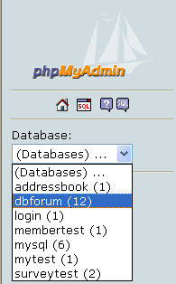
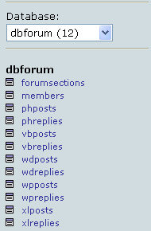

Setting up a Database for a Forum
This lesson is part of an ongoing Foruml tutorial. The first part is here: Build your own Forum, along with all the files you need.
So far, the databases you have been constructing have been fairly simple. They only consisted of one or two tables, and there wasn't much linking done between each table. For this fourm project, we'll need a more complex database. And lots of tables!
To see what the database looks like, enter this address in your browser.
http://localhost/phpMyAdmin/
This will open the phpMyAdmin page. On the left hand side, click the drop down list for Databases. If you have copied the dbforum database over to the data folder correctly, you should see it on the list:

Select dbforum from the list and you should see the tables in the database displayed. (If you can't see dbforum, you may not have copied the database over to your mysql/data folder correctly.)

In this database, there are a massive 12 tables! But why so many?
The reason why there are so many tables is because we want to access the information in the database as quickly as possible. You can get a real speed boost by keeping data in different tables, rather than lumping all the information into one or two tables. For example, we could have had one table to hold all the information about the Microsoft Word section. We could have had columns for the Posts, and columns for the replies. But this would mean that the one table would be holding a lot of information: the text for the post, and the text for the replies. It's much better (for coding and for speed) to keep posts and replies in separate tables.
(When working on larger web projects, taking the time to plan your database, and all the tables you'll need, will pay dividends. One thing you don't want to do is get half way through your coding only to discover that your database isn't structured correctly, and that you're going to need another table, or extra columns.)
As well as 10 tables for the posts and replies there is a separate table for the forum sections, and a separate table for member information. Let's take a look at the forumsections table first:.